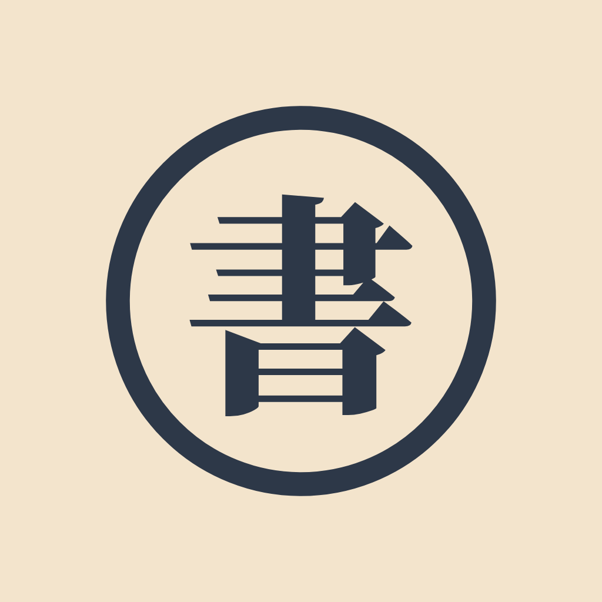

Colour
Chrome, accent and brand, page themes and marks. Both app themes are shown side by side; the page uses the theme chosen above.
| Light · Dark | Token | Values | Use |
|---|
Typography
Interface, editorial and book roles, never interchanged. Follow docs/typography.md.
Space, size and radius
A 4 px spacing base, the layout sizes every surface shares, and four radii.
| Sample | Token | Value | Use |
|---|
Elevation
Five shadows per theme. Borders separate everything else.
| Sample | Token | Use |
|---|
Icons
Lucide glyphs (ISC licence) on a 24 px grid with a 1.75 px stroke, drawn in currentColor. 16 px in pointer controls, 20 px on touch.
Brand
The app icon is the mark. In the interface the mark is 書 in Noto Serif JP on a navy disc, beside the wordmark.

書Shōsai
CoverBrand ground for generated covers and marketing